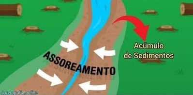
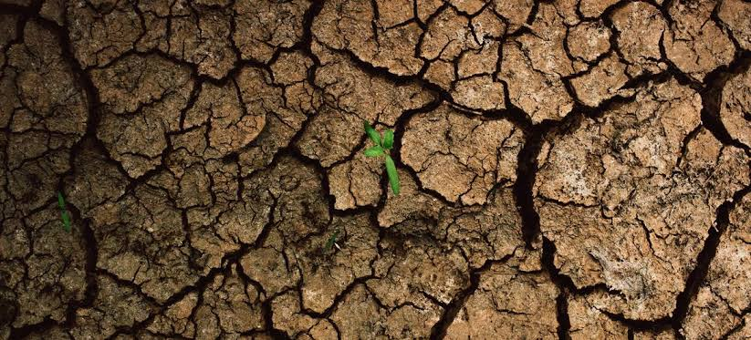
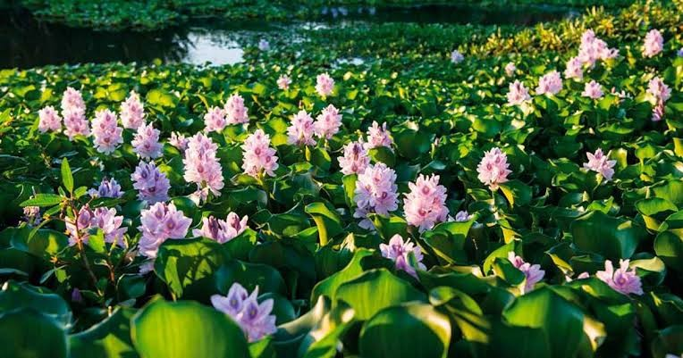

Assoreamento das lagoas
Acumulação de sedimentos provenientes da erosão reduz a profundidade dos corpos de água, acelera o preenchimento natural e altera a qualidade e a disponibilidade de habitats de reprodução.

A característica fundamental dos habitats aquáticos é a presença de água durante parte ou todo o ano. No Jardim Botânico do ISPM, as lagoas e pequenas zonas húmidas dependem principalmente da precipitação, do escoamento superficial e da dinâmica do lençol freático local. A disponibilidade de água condiciona diretamente a distribuição da fauna e da flora associadas a estes ambientes.
Os habitats aquáticos encontram-se entre os ecossistemas mais produtivos do planeta. A disponibilidade constante de água favorece o crescimento de plantas aquáticas, algas, microrganismos e diversas formas de vida que constituem a base das cadeias alimentares aquáticas. Esta elevada produtividade sustenta populações de anfíbios, insetos aquáticos, peixes e aves associadas aos ambientes húmidos (Mitsch & Gosselink, 2015).
As margens das lagoas são frequentemente ocupadas por plantas adaptadas a solos saturados ou permanentemente húmidos. Esta vegetação exerce funções ecológicas importantes, incluindo a estabilização das margens, retenção de sedimentos, absorção de nutrientes e fornecimento de abrigo para a fauna. A vegetação ripícola também atua como zona tampão entre os habitats terrestres e aquáticos (Junk et al., 2013).
Os habitats aquáticos constituem áreas críticas para a reprodução de numerosas espécies de anfíbios, insetos, aves e outros organismos. Muitos destes animais dependem da água para completar o seu ciclo de vida. As lagoas funcionam igualmente como locais de dessedentação para a fauna terrestre durante os períodos de escassez hídrica (Mitsch & Gosselink, 2015).
As lagoas e zonas húmidas desempenham funções fundamentais na regulação dos fluxos de água dentro da paisagem. Estes ecossistemas atuam como reservatórios naturais que armazenam água durante os períodos chuvosos e a libertam gradualmente durante a estação seca. Simultaneamente, retêm sedimentos transportados pela erosão, contribuindo para a melhoria da qualidade da água e para a proteção dos recursos hídricos locais (Junk et al., 2013).

Acumulação de sedimentos provenientes da erosão reduz a profundidade dos corpos de água, acelera o preenchimento natural e altera a qualidade e a disponibilidade de habitats de reprodução.

Reduz os níveis de água, compromete organismos aquáticos e favorece apenas espécies mais resistentes, simplificando as comunidades ecológicas.

Cobertura da superfície da água, redução da oxigenação e alteração da estrutura das comunidades aquáticas.